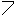

SDS Widgets
The following list shows all widgets available in SDS. As described in the main
help pages of SDS all properties for the selected widget are in the property view.
Each property can be connected to a process variable (see section dynamisation of properties).
A more detailed widget description is in the Document 'Synoptic Display Studio Widgets' on the
CSS Homepage.
SDS Widget list
Simple Widgets
 Arc: Arc with an angle from 0° to 360°.
Arc: Arc with an angle from 0° to 360°.
 Ellipse: Ellipse with a vertical or horizontal borderline
to represent e. g. a level.
Ellipse: Ellipse with a vertical or horizontal borderline
to represent e. g. a level.
 Image: An Image located in the workspace. The formats bmp, jpg and gif are possible.
Image: An Image located in the workspace. The formats bmp, jpg and gif are possible.
 Label: Text field with selectable font and font size.
Label: Text field with selectable font and font size.
 Polygon: Figure that is bounded by straight lines. Terminate the creation of the figure with a double click.
Polygon: Figure that is bounded by straight lines. Terminate the creation of the figure with a double click.
 Polyline: Sequence of straight lines. Terminate the creation of the figure with a double click.
 Rectangle: Rectangle with a vertical or horizontal borderline to represent e. g. a level.
Rectangle: Rectangle with a vertical or horizontal borderline to represent e. g. a level.
Complex Widgets
 Bargraph: Shows the value of a process variable in a bargraph with alarm thresholds.
Bargraph: Shows the value of a process variable in a bargraph with alarm thresholds.
 Meter: Shows the value of a process variable in a bargraph with alarm thresholds.
Meter: Shows the value of a process variable in a bargraph with alarm thresholds.
Switch: Collection of symbols to indicate the state of a switch.
 Waveform: Monitors the value of one process variable in a graph.
Waveform: Monitors the value of one process variable in a graph.
Action Widgets
Advanced Slider: Displays a value and allows the user to modify that value within a given range. Note that the slider is designed for usage with value ranges like 0..100. It will not work correctly for very large value ranges and/or very small increments.
Action Button:
 Menu Button:
Menu Button:
 Simple Slider: Sets a value within a range of values. Note that the slider is designed for usage with value ranges like 0..100. It will not work correctly for very large value ranges and/or very small increments.
Simple Slider: Sets a value within a range of values. Note that the slider is designed for usage with value ranges like 0..100. It will not work correctly for very large value ranges and/or very small increments.
 Text Input:
Text Input:
Other Widgets
 Grouping Container:
Grouping Container:
 Linking Container:
Linking Container:
 Timer:
Timer: